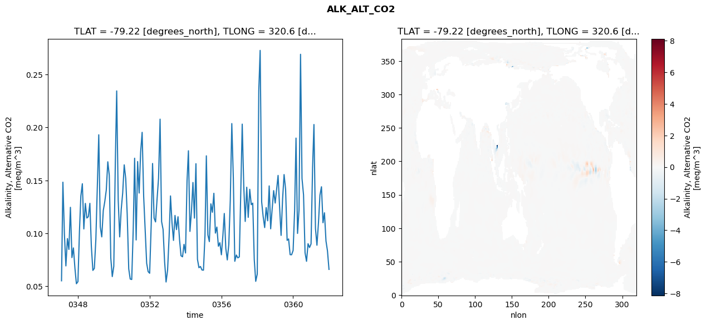
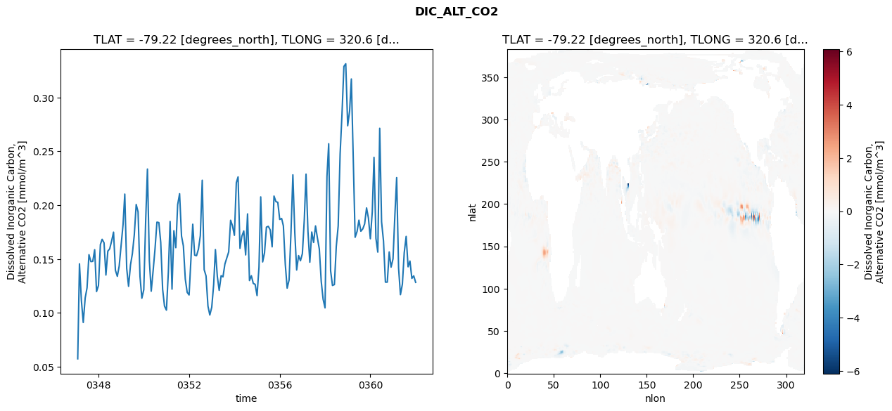
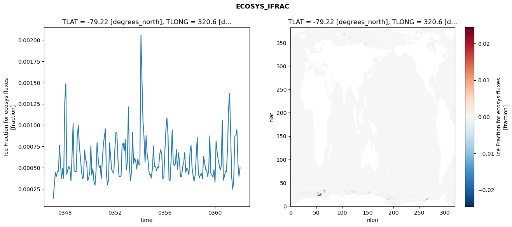
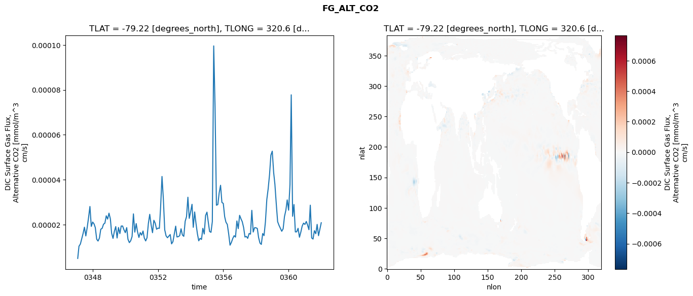

glb-dor_North_Atlantic_basin_012_1999-01-01_00048#
Simulation details#
Case: smyle.cdr-atlas-v0.glb-dor_North_Atlantic_basin_012_1999-01-01_00048.001
Basin: North_Atlantic_basin
Polygon: 12.0
Start date: 1999-01
Show code cell source Hide code cell source
import xarray as xr
import matplotlib.pyplot as plt
Show code cell source Hide code cell source
zarr_store = "/path/to/zarr/store"
# Parameters
zarr_store = "/global/cfs/projectdirs/m4746/Projects/Ocean-CDR-Atlas-v0/data/validation/smyle.cdr-atlas-v0.glb-dor_North_Atlantic_basin_012_1999-01-01_00048.001.validation.zarr"
Show code cell source Hide code cell source
%%time
ds_o = xr.open_zarr(zarr_store).compute()
ds_o
CPU times: user 657 ms, sys: 474 ms, total: 1.13 s
Wall time: 1.39 s
<xarray.Dataset> Size: 2MB
Dimensions: (nlat: 384, nlon: 320, time: 180)
Coordinates:
TLAT float64 8B -79.22
TLONG float64 8B 320.6
ULAT float64 8B -78.95
ULONG float64 8B 321.1
* time (time) object 1kB 0347-02-01 00:00:00 ... 0362-01-01 0...
z_t float32 4B 500.0
Dimensions without coordinates: nlat, nlon
Data variables:
ALK_ALT_CO2_diff (nlat, nlon) float32 492kB nan nan nan ... nan nan nan
ALK_ALT_CO2_rmse (time) float64 1kB 0.05524 0.1483 ... 0.08357 0.06602
DIC_ALT_CO2_diff (nlat, nlon) float32 492kB nan nan nan ... nan nan nan
DIC_ALT_CO2_rmse (time) float64 1kB 0.05734 0.1456 ... 0.1344 0.1283
ECOSYS_IFRAC_diff (nlat, nlon) float32 492kB nan nan nan ... nan nan nan
ECOSYS_IFRAC_rmse (time) float64 1kB 0.0001405 0.0002858 ... 0.0004979
FG_ALT_CO2_diff (nlat, nlon) float32 492kB nan nan nan ... nan nan nan
FG_ALT_CO2_rmse (time) float64 1kB 4.933e-06 1.037e-05 ... 2.083e-05xarray.Dataset
- nlat: 384
- nlon: 320
- time: 180
- TLAT()float64-79.22
- long_name :
- array of t-grid latitudes
- units :
- degrees_north
array(-79.22052261)
- TLONG()float64320.6
- long_name :
- array of t-grid longitudes
- units :
- degrees_east
array(320.56250892)
- ULAT()float64-78.95
- long_name :
- array of u-grid latitudes
- units :
- degrees_north
array(-78.95289509)
- ULONG()float64321.1
- long_name :
- array of u-grid longitudes
- units :
- degrees_east
array(321.12500894)
- time(time)object0347-02-01 00:00:00 ... 0362-01-...
- bounds :
- time_bound
- long_name :
- time
array([cftime.DatetimeNoLeap(347, 2, 1, 0, 0, 0, 0, has_year_zero=True), cftime.DatetimeNoLeap(347, 3, 1, 0, 0, 0, 0, has_year_zero=True), cftime.DatetimeNoLeap(347, 4, 1, 0, 0, 0, 0, has_year_zero=True), cftime.DatetimeNoLeap(347, 5, 1, 0, 0, 0, 0, has_year_zero=True), cftime.DatetimeNoLeap(347, 6, 1, 0, 0, 0, 0, has_year_zero=True), cftime.DatetimeNoLeap(347, 7, 1, 0, 0, 0, 0, has_year_zero=True), cftime.DatetimeNoLeap(347, 8, 1, 0, 0, 0, 0, has_year_zero=True), cftime.DatetimeNoLeap(347, 9, 1, 0, 0, 0, 0, has_year_zero=True), cftime.DatetimeNoLeap(347, 10, 1, 0, 0, 0, 0, has_year_zero=True), cftime.DatetimeNoLeap(347, 11, 1, 0, 0, 0, 0, has_year_zero=True), cftime.DatetimeNoLeap(347, 12, 1, 0, 0, 0, 0, has_year_zero=True), cftime.DatetimeNoLeap(348, 1, 1, 0, 0, 0, 0, has_year_zero=True), cftime.DatetimeNoLeap(348, 2, 1, 0, 0, 0, 0, has_year_zero=True), cftime.DatetimeNoLeap(348, 3, 1, 0, 0, 0, 0, has_year_zero=True), cftime.DatetimeNoLeap(348, 4, 1, 0, 0, 0, 0, has_year_zero=True), cftime.DatetimeNoLeap(348, 5, 1, 0, 0, 0, 0, has_year_zero=True), cftime.DatetimeNoLeap(348, 6, 1, 0, 0, 0, 0, has_year_zero=True), cftime.DatetimeNoLeap(348, 7, 1, 0, 0, 0, 0, has_year_zero=True), cftime.DatetimeNoLeap(348, 8, 1, 0, 0, 0, 0, has_year_zero=True), cftime.DatetimeNoLeap(348, 9, 1, 0, 0, 0, 0, has_year_zero=True), cftime.DatetimeNoLeap(348, 10, 1, 0, 0, 0, 0, has_year_zero=True), cftime.DatetimeNoLeap(348, 11, 1, 0, 0, 0, 0, has_year_zero=True), cftime.DatetimeNoLeap(348, 12, 1, 0, 0, 0, 0, has_year_zero=True), cftime.DatetimeNoLeap(349, 1, 1, 0, 0, 0, 0, has_year_zero=True), cftime.DatetimeNoLeap(349, 2, 1, 0, 0, 0, 0, has_year_zero=True), cftime.DatetimeNoLeap(349, 3, 1, 0, 0, 0, 0, has_year_zero=True), cftime.DatetimeNoLeap(349, 4, 1, 0, 0, 0, 0, has_year_zero=True), cftime.DatetimeNoLeap(349, 5, 1, 0, 0, 0, 0, has_year_zero=True), cftime.DatetimeNoLeap(349, 6, 1, 0, 0, 0, 0, has_year_zero=True), cftime.DatetimeNoLeap(349, 7, 1, 0, 0, 0, 0, has_year_zero=True), cftime.DatetimeNoLeap(349, 8, 1, 0, 0, 0, 0, has_year_zero=True), cftime.DatetimeNoLeap(349, 9, 1, 0, 0, 0, 0, has_year_zero=True), cftime.DatetimeNoLeap(349, 10, 1, 0, 0, 0, 0, has_year_zero=True), cftime.DatetimeNoLeap(349, 11, 1, 0, 0, 0, 0, has_year_zero=True), cftime.DatetimeNoLeap(349, 12, 1, 0, 0, 0, 0, has_year_zero=True), cftime.DatetimeNoLeap(350, 1, 1, 0, 0, 0, 0, has_year_zero=True), cftime.DatetimeNoLeap(350, 2, 1, 0, 0, 0, 0, has_year_zero=True), cftime.DatetimeNoLeap(350, 3, 1, 0, 0, 0, 0, has_year_zero=True), cftime.DatetimeNoLeap(350, 4, 1, 0, 0, 0, 0, has_year_zero=True), cftime.DatetimeNoLeap(350, 5, 1, 0, 0, 0, 0, has_year_zero=True), cftime.DatetimeNoLeap(350, 6, 1, 0, 0, 0, 0, has_year_zero=True), cftime.DatetimeNoLeap(350, 7, 1, 0, 0, 0, 0, has_year_zero=True), cftime.DatetimeNoLeap(350, 8, 1, 0, 0, 0, 0, has_year_zero=True), cftime.DatetimeNoLeap(350, 9, 1, 0, 0, 0, 0, has_year_zero=True), cftime.DatetimeNoLeap(350, 10, 1, 0, 0, 0, 0, has_year_zero=True), cftime.DatetimeNoLeap(350, 11, 1, 0, 0, 0, 0, has_year_zero=True), cftime.DatetimeNoLeap(350, 12, 1, 0, 0, 0, 0, has_year_zero=True), cftime.DatetimeNoLeap(351, 1, 1, 0, 0, 0, 0, has_year_zero=True), cftime.DatetimeNoLeap(351, 2, 1, 0, 0, 0, 0, has_year_zero=True), cftime.DatetimeNoLeap(351, 3, 1, 0, 0, 0, 0, has_year_zero=True), cftime.DatetimeNoLeap(351, 4, 1, 0, 0, 0, 0, has_year_zero=True), cftime.DatetimeNoLeap(351, 5, 1, 0, 0, 0, 0, has_year_zero=True), cftime.DatetimeNoLeap(351, 6, 1, 0, 0, 0, 0, has_year_zero=True), cftime.DatetimeNoLeap(351, 7, 1, 0, 0, 0, 0, has_year_zero=True), cftime.DatetimeNoLeap(351, 8, 1, 0, 0, 0, 0, has_year_zero=True), cftime.DatetimeNoLeap(351, 9, 1, 0, 0, 0, 0, has_year_zero=True), cftime.DatetimeNoLeap(351, 10, 1, 0, 0, 0, 0, has_year_zero=True), cftime.DatetimeNoLeap(351, 11, 1, 0, 0, 0, 0, has_year_zero=True), cftime.DatetimeNoLeap(351, 12, 1, 0, 0, 0, 0, has_year_zero=True), cftime.DatetimeNoLeap(352, 1, 1, 0, 0, 0, 0, has_year_zero=True), cftime.DatetimeNoLeap(352, 2, 1, 0, 0, 0, 0, has_year_zero=True), cftime.DatetimeNoLeap(352, 3, 1, 0, 0, 0, 0, has_year_zero=True), cftime.DatetimeNoLeap(352, 4, 1, 0, 0, 0, 0, has_year_zero=True), cftime.DatetimeNoLeap(352, 5, 1, 0, 0, 0, 0, has_year_zero=True), cftime.DatetimeNoLeap(352, 6, 1, 0, 0, 0, 0, has_year_zero=True), cftime.DatetimeNoLeap(352, 7, 1, 0, 0, 0, 0, has_year_zero=True), cftime.DatetimeNoLeap(352, 8, 1, 0, 0, 0, 0, has_year_zero=True), cftime.DatetimeNoLeap(352, 9, 1, 0, 0, 0, 0, has_year_zero=True), cftime.DatetimeNoLeap(352, 10, 1, 0, 0, 0, 0, has_year_zero=True), cftime.DatetimeNoLeap(352, 11, 1, 0, 0, 0, 0, has_year_zero=True), cftime.DatetimeNoLeap(352, 12, 1, 0, 0, 0, 0, has_year_zero=True), cftime.DatetimeNoLeap(353, 1, 1, 0, 0, 0, 0, has_year_zero=True), cftime.DatetimeNoLeap(353, 2, 1, 0, 0, 0, 0, has_year_zero=True), cftime.DatetimeNoLeap(353, 3, 1, 0, 0, 0, 0, has_year_zero=True), cftime.DatetimeNoLeap(353, 4, 1, 0, 0, 0, 0, has_year_zero=True), cftime.DatetimeNoLeap(353, 5, 1, 0, 0, 0, 0, has_year_zero=True), cftime.DatetimeNoLeap(353, 6, 1, 0, 0, 0, 0, has_year_zero=True), cftime.DatetimeNoLeap(353, 7, 1, 0, 0, 0, 0, has_year_zero=True), cftime.DatetimeNoLeap(353, 8, 1, 0, 0, 0, 0, has_year_zero=True), cftime.DatetimeNoLeap(353, 9, 1, 0, 0, 0, 0, has_year_zero=True), cftime.DatetimeNoLeap(353, 10, 1, 0, 0, 0, 0, has_year_zero=True), cftime.DatetimeNoLeap(353, 11, 1, 0, 0, 0, 0, has_year_zero=True), cftime.DatetimeNoLeap(353, 12, 1, 0, 0, 0, 0, has_year_zero=True), cftime.DatetimeNoLeap(354, 1, 1, 0, 0, 0, 0, has_year_zero=True), cftime.DatetimeNoLeap(354, 2, 1, 0, 0, 0, 0, has_year_zero=True), cftime.DatetimeNoLeap(354, 3, 1, 0, 0, 0, 0, has_year_zero=True), cftime.DatetimeNoLeap(354, 4, 1, 0, 0, 0, 0, has_year_zero=True), cftime.DatetimeNoLeap(354, 5, 1, 0, 0, 0, 0, has_year_zero=True), cftime.DatetimeNoLeap(354, 6, 1, 0, 0, 0, 0, has_year_zero=True), cftime.DatetimeNoLeap(354, 7, 1, 0, 0, 0, 0, has_year_zero=True), cftime.DatetimeNoLeap(354, 8, 1, 0, 0, 0, 0, has_year_zero=True), cftime.DatetimeNoLeap(354, 9, 1, 0, 0, 0, 0, has_year_zero=True), cftime.DatetimeNoLeap(354, 10, 1, 0, 0, 0, 0, has_year_zero=True), cftime.DatetimeNoLeap(354, 11, 1, 0, 0, 0, 0, has_year_zero=True), cftime.DatetimeNoLeap(354, 12, 1, 0, 0, 0, 0, has_year_zero=True), cftime.DatetimeNoLeap(355, 1, 1, 0, 0, 0, 0, has_year_zero=True), cftime.DatetimeNoLeap(355, 2, 1, 0, 0, 0, 0, has_year_zero=True), cftime.DatetimeNoLeap(355, 3, 1, 0, 0, 0, 0, has_year_zero=True), cftime.DatetimeNoLeap(355, 4, 1, 0, 0, 0, 0, has_year_zero=True), cftime.DatetimeNoLeap(355, 5, 1, 0, 0, 0, 0, has_year_zero=True), cftime.DatetimeNoLeap(355, 6, 1, 0, 0, 0, 0, has_year_zero=True), cftime.DatetimeNoLeap(355, 7, 1, 0, 0, 0, 0, has_year_zero=True), cftime.DatetimeNoLeap(355, 8, 1, 0, 0, 0, 0, has_year_zero=True), cftime.DatetimeNoLeap(355, 9, 1, 0, 0, 0, 0, has_year_zero=True), cftime.DatetimeNoLeap(355, 10, 1, 0, 0, 0, 0, has_year_zero=True), cftime.DatetimeNoLeap(355, 11, 1, 0, 0, 0, 0, has_year_zero=True), cftime.DatetimeNoLeap(355, 12, 1, 0, 0, 0, 0, has_year_zero=True), cftime.DatetimeNoLeap(356, 1, 1, 0, 0, 0, 0, has_year_zero=True), cftime.DatetimeNoLeap(356, 2, 1, 0, 0, 0, 0, has_year_zero=True), cftime.DatetimeNoLeap(356, 3, 1, 0, 0, 0, 0, has_year_zero=True), cftime.DatetimeNoLeap(356, 4, 1, 0, 0, 0, 0, has_year_zero=True), cftime.DatetimeNoLeap(356, 5, 1, 0, 0, 0, 0, has_year_zero=True), cftime.DatetimeNoLeap(356, 6, 1, 0, 0, 0, 0, has_year_zero=True), cftime.DatetimeNoLeap(356, 7, 1, 0, 0, 0, 0, has_year_zero=True), cftime.DatetimeNoLeap(356, 8, 1, 0, 0, 0, 0, has_year_zero=True), cftime.DatetimeNoLeap(356, 9, 1, 0, 0, 0, 0, has_year_zero=True), cftime.DatetimeNoLeap(356, 10, 1, 0, 0, 0, 0, has_year_zero=True), cftime.DatetimeNoLeap(356, 11, 1, 0, 0, 0, 0, has_year_zero=True), cftime.DatetimeNoLeap(356, 12, 1, 0, 0, 0, 0, has_year_zero=True), cftime.DatetimeNoLeap(357, 1, 1, 0, 0, 0, 0, has_year_zero=True), cftime.DatetimeNoLeap(357, 2, 1, 0, 0, 0, 0, has_year_zero=True), cftime.DatetimeNoLeap(357, 3, 1, 0, 0, 0, 0, has_year_zero=True), cftime.DatetimeNoLeap(357, 4, 1, 0, 0, 0, 0, has_year_zero=True), cftime.DatetimeNoLeap(357, 5, 1, 0, 0, 0, 0, has_year_zero=True), cftime.DatetimeNoLeap(357, 6, 1, 0, 0, 0, 0, has_year_zero=True), cftime.DatetimeNoLeap(357, 7, 1, 0, 0, 0, 0, has_year_zero=True), cftime.DatetimeNoLeap(357, 8, 1, 0, 0, 0, 0, has_year_zero=True), cftime.DatetimeNoLeap(357, 9, 1, 0, 0, 0, 0, has_year_zero=True), cftime.DatetimeNoLeap(357, 10, 1, 0, 0, 0, 0, has_year_zero=True), cftime.DatetimeNoLeap(357, 11, 1, 0, 0, 0, 0, has_year_zero=True), cftime.DatetimeNoLeap(357, 12, 1, 0, 0, 0, 0, has_year_zero=True), cftime.DatetimeNoLeap(358, 1, 1, 0, 0, 0, 0, has_year_zero=True), cftime.DatetimeNoLeap(358, 2, 1, 0, 0, 0, 0, has_year_zero=True), cftime.DatetimeNoLeap(358, 3, 1, 0, 0, 0, 0, has_year_zero=True), cftime.DatetimeNoLeap(358, 4, 1, 0, 0, 0, 0, has_year_zero=True), cftime.DatetimeNoLeap(358, 5, 1, 0, 0, 0, 0, has_year_zero=True), cftime.DatetimeNoLeap(358, 6, 1, 0, 0, 0, 0, has_year_zero=True), cftime.DatetimeNoLeap(358, 7, 1, 0, 0, 0, 0, has_year_zero=True), cftime.DatetimeNoLeap(358, 8, 1, 0, 0, 0, 0, has_year_zero=True), cftime.DatetimeNoLeap(358, 9, 1, 0, 0, 0, 0, has_year_zero=True), cftime.DatetimeNoLeap(358, 10, 1, 0, 0, 0, 0, has_year_zero=True), cftime.DatetimeNoLeap(358, 11, 1, 0, 0, 0, 0, has_year_zero=True), cftime.DatetimeNoLeap(358, 12, 1, 0, 0, 0, 0, has_year_zero=True), cftime.DatetimeNoLeap(359, 1, 1, 0, 0, 0, 0, has_year_zero=True), cftime.DatetimeNoLeap(359, 2, 1, 0, 0, 0, 0, has_year_zero=True), cftime.DatetimeNoLeap(359, 3, 1, 0, 0, 0, 0, has_year_zero=True), cftime.DatetimeNoLeap(359, 4, 1, 0, 0, 0, 0, has_year_zero=True), cftime.DatetimeNoLeap(359, 5, 1, 0, 0, 0, 0, has_year_zero=True), cftime.DatetimeNoLeap(359, 6, 1, 0, 0, 0, 0, has_year_zero=True), cftime.DatetimeNoLeap(359, 7, 1, 0, 0, 0, 0, has_year_zero=True), cftime.DatetimeNoLeap(359, 8, 1, 0, 0, 0, 0, has_year_zero=True), cftime.DatetimeNoLeap(359, 9, 1, 0, 0, 0, 0, has_year_zero=True), cftime.DatetimeNoLeap(359, 10, 1, 0, 0, 0, 0, has_year_zero=True), cftime.DatetimeNoLeap(359, 11, 1, 0, 0, 0, 0, has_year_zero=True), cftime.DatetimeNoLeap(359, 12, 1, 0, 0, 0, 0, has_year_zero=True), cftime.DatetimeNoLeap(360, 1, 1, 0, 0, 0, 0, has_year_zero=True), cftime.DatetimeNoLeap(360, 2, 1, 0, 0, 0, 0, has_year_zero=True), cftime.DatetimeNoLeap(360, 3, 1, 0, 0, 0, 0, has_year_zero=True), cftime.DatetimeNoLeap(360, 4, 1, 0, 0, 0, 0, has_year_zero=True), cftime.DatetimeNoLeap(360, 5, 1, 0, 0, 0, 0, has_year_zero=True), cftime.DatetimeNoLeap(360, 6, 1, 0, 0, 0, 0, has_year_zero=True), cftime.DatetimeNoLeap(360, 7, 1, 0, 0, 0, 0, has_year_zero=True), cftime.DatetimeNoLeap(360, 8, 1, 0, 0, 0, 0, has_year_zero=True), cftime.DatetimeNoLeap(360, 9, 1, 0, 0, 0, 0, has_year_zero=True), cftime.DatetimeNoLeap(360, 10, 1, 0, 0, 0, 0, has_year_zero=True), cftime.DatetimeNoLeap(360, 11, 1, 0, 0, 0, 0, has_year_zero=True), cftime.DatetimeNoLeap(360, 12, 1, 0, 0, 0, 0, has_year_zero=True), cftime.DatetimeNoLeap(361, 1, 1, 0, 0, 0, 0, has_year_zero=True), cftime.DatetimeNoLeap(361, 2, 1, 0, 0, 0, 0, has_year_zero=True), cftime.DatetimeNoLeap(361, 3, 1, 0, 0, 0, 0, has_year_zero=True), cftime.DatetimeNoLeap(361, 4, 1, 0, 0, 0, 0, has_year_zero=True), cftime.DatetimeNoLeap(361, 5, 1, 0, 0, 0, 0, has_year_zero=True), cftime.DatetimeNoLeap(361, 6, 1, 0, 0, 0, 0, has_year_zero=True), cftime.DatetimeNoLeap(361, 7, 1, 0, 0, 0, 0, has_year_zero=True), cftime.DatetimeNoLeap(361, 8, 1, 0, 0, 0, 0, has_year_zero=True), cftime.DatetimeNoLeap(361, 9, 1, 0, 0, 0, 0, has_year_zero=True), cftime.DatetimeNoLeap(361, 10, 1, 0, 0, 0, 0, has_year_zero=True), cftime.DatetimeNoLeap(361, 11, 1, 0, 0, 0, 0, has_year_zero=True), cftime.DatetimeNoLeap(361, 12, 1, 0, 0, 0, 0, has_year_zero=True), cftime.DatetimeNoLeap(362, 1, 1, 0, 0, 0, 0, has_year_zero=True)], dtype=object) - z_t()float32500.0
- long_name :
- depth from surface to midpoint of layer
- positive :
- down
- units :
- centimeters
- valid_max :
- 537500.0
- valid_min :
- 500.0
array(500., dtype=float32)
- ALK_ALT_CO2_diff(nlat, nlon)float32nan nan nan nan ... nan nan nan nan
- cell_methods :
- time: mean
- grid_loc :
- 3111
- long_name :
- Alkalinity, Alternative CO2
- units :
- meq/m^3
array([[ nan, nan, nan, ..., nan, nan, nan], [ nan, nan, nan, ..., nan, nan, nan], [-0.03491211, -0.02612305, -0.02050781, ..., nan, nan, nan], ..., [ nan, nan, nan, ..., nan, nan, nan], [ nan, nan, nan, ..., nan, nan, nan], [ nan, nan, nan, ..., nan, nan, nan]], dtype=float32) - ALK_ALT_CO2_rmse(time)float640.05524 0.1483 ... 0.08357 0.06602
- cell_methods :
- time: mean
- grid_loc :
- 3111
- long_name :
- Alkalinity, Alternative CO2
- units :
- meq/m^3
array([0.05523526, 0.14831477, 0.09901007, 0.0693124 , 0.09508512, 0.08484052, 0.12460649, 0.07715089, 0.08628482, 0.06710369, 0.05248015, 0.05444707, 0.10191454, 0.13519997, 0.14685851, 0.10419296, 0.12829421, 0.11449647, 0.11579074, 0.12835636, 0.08789715, 0.06505448, 0.06696885, 0.09444485, 0.14630535, 0.19305366, 0.10617053, 0.09670598, 0.12157896, 0.12983733, 0.14085817, 0.16758768, 0.15493969, 0.07675486, 0.05923252, 0.06897138, 0.16662733, 0.23446925, 0.13131001, 0.09670373, 0.12264141, 0.13814886, 0.16467926, 0.15166102, 0.11805486, 0.06654383, 0.05691866, 0.05646313, 0.10459447, 0.1709437 , 0.09379134, 0.16782661, 0.13805849, 0.1765806 , 0.19537831, 0.13489532, 0.10343877, 0.07180675, 0.06394335, 0.0623565 , 0.10749522, 0.16596632, 0.11444912, 0.11081505, 0.13253344, 0.15207448, 0.20780472, 0.11110836, 0.10372329, 0.07337706, 0.05412261, 0.06540925, 0.09722436, 0.13535972, 0.10985994, 0.09337283, 0.1169315 , 0.1035875 , 0.11570381, 0.09418266, 0.07889951, 0.07789769, 0.08962055, 0.0814958 , 0.14970994, 0.17797974, 0.10186619, 0.12019012, 0.14805261, 0.1144124 , 0.16577882, 0.07558055, 0.06762377, 0.06877187, 0.06549009, 0.06526459, 0.09788799, 0.1732026 , 0.09851778, 0.09225426, 0.12788772, 0.11993229, 0.13784078, 0.10027524, 0.10594623, 0.08786207, 0.09122828, 0.07982492, 0.0983637 , 0.11879738, 0.08581275, 0.07496243, 0.08960923, 0.13115052, 0.20364817, 0.15227014, 0.07366098, 0.0795974 , 0.07687334, 0.07779866, 0.14222746, 0.20312544, 0.14514354, 0.11128529, 0.14355951, 0.11511433, 0.14160887, 0.12706329, 0.12858711, 0.0753511 , 0.05475262, 0.06160482, 0.23449911, 0.27270838, 0.12963605, 0.11594871, 0.10548947, 0.12434179, 0.11187936, 0.14481546, 0.10432584, 0.12345575, 0.14036228, 0.1286391 , 0.1424709 , 0.1547166 , 0.12466653, 0.09810547, 0.13268346, 0.15551911, 0.14163547, 0.09342613, 0.09473801, 0.07991956, 0.07983447, 0.0839205 , 0.12222173, 0.18993798, 0.09996472, 0.12198927, 0.26904001, 0.15170953, 0.1363712 , 0.08165125, 0.07365823, 0.09027028, 0.08665174, 0.09005844, 0.16173008, 0.20275983, 0.10454994, 0.08882444, 0.1100818 , 0.13610803, 0.14400196, 0.11005874, 0.11943748, 0.0928008 , 0.08357095, 0.06601928]) - DIC_ALT_CO2_diff(nlat, nlon)float32nan nan nan nan ... nan nan nan nan
- cell_methods :
- time: mean
- grid_loc :
- 3111
- long_name :
- Dissolved Inorganic Carbon, Alternative CO2
- units :
- mmol/m^3
array([[ nan, nan, nan, ..., nan, nan, nan], [ nan, nan, nan, ..., nan, nan, nan], [-0.04589844, -0.03564453, -0.02612305, ..., nan, nan, nan], ..., [ nan, nan, nan, ..., nan, nan, nan], [ nan, nan, nan, ..., nan, nan, nan], [ nan, nan, nan, ..., nan, nan, nan]], dtype=float32) - DIC_ALT_CO2_rmse(time)float640.05734 0.1456 ... 0.1344 0.1283
- cell_methods :
- time: mean
- grid_loc :
- 3111
- long_name :
- Dissolved Inorganic Carbon, Alternative CO2
- units :
- mmol/m^3
array([0.05734499, 0.14560425, 0.11154443, 0.09109146, 0.11385932, 0.1233036 , 0.15406804, 0.14760809, 0.14784003, 0.1586855 , 0.11982616, 0.12539483, 0.16347473, 0.16837878, 0.16509532, 0.13515887, 0.15738496, 0.15950214, 0.16678606, 0.17499048, 0.13957223, 0.13395875, 0.14352493, 0.16274819, 0.18199981, 0.21035311, 0.14124351, 0.1247043 , 0.14456657, 0.15488595, 0.17234956, 0.20067487, 0.19389606, 0.13391847, 0.11363922, 0.12147118, 0.18624815, 0.23359861, 0.14851342, 0.12016057, 0.1393736 , 0.15933025, 0.18430318, 0.18387856, 0.16560952, 0.1217831 , 0.10628473, 0.10255922, 0.13800483, 0.18490962, 0.12204517, 0.17631241, 0.16057229, 0.20055024, 0.21070067, 0.17135323, 0.1621322 , 0.13137688, 0.11912373, 0.11662808, 0.1505261 , 0.18235539, 0.15362159, 0.1531239 , 0.15932507, 0.17172969, 0.22323322, 0.14012849, 0.1343202 , 0.10630035, 0.09802961, 0.10524109, 0.12636085, 0.15880448, 0.13377044, 0.12091997, 0.13452905, 0.13348505, 0.14540951, 0.15118681, 0.15664179, 0.18606648, 0.18086736, 0.17206929, 0.22101772, 0.22629407, 0.15993316, 0.17114364, 0.17610673, 0.15384051, 0.19195693, 0.1300189 , 0.13452643, 0.12734688, 0.12652902, 0.11608611, 0.14242939, 0.20774705, 0.14732258, 0.15567466, 0.17965855, 0.1804008 , 0.17709175, 0.16136005, 0.2085329 , 0.20331844, 0.20271874, 0.18681847, 0.18769616, 0.18079852, 0.14500156, 0.12298673, 0.13060624, 0.17393384, 0.22825252, 0.17454882, 0.13983744, 0.15321189, 0.14843554, 0.15498126, 0.18661289, 0.22886279, 0.17565981, 0.14706936, 0.17510988, 0.16542704, 0.18076606, 0.16940419, 0.1593299 , 0.1291801 , 0.11275549, 0.10467805, 0.22676608, 0.25710487, 0.13904948, 0.12543855, 0.12628195, 0.16161059, 0.1807948 , 0.24764745, 0.28429554, 0.32892004, 0.33142138, 0.27378245, 0.28752044, 0.3172641 , 0.24353654, 0.17019669, 0.17564127, 0.18611735, 0.17583814, 0.17803079, 0.18260191, 0.19748873, 0.18813694, 0.16888404, 0.1939065 , 0.24446206, 0.1692244 , 0.15646407, 0.27149018, 0.18453297, 0.16674368, 0.12850477, 0.12853348, 0.15661998, 0.14247225, 0.15009702, 0.19158686, 0.22567427, 0.14151532, 0.11692341, 0.12663131, 0.15590536, 0.17104502, 0.1427957 , 0.14817861, 0.13203582, 0.13439701, 0.12832538]) - ECOSYS_IFRAC_diff(nlat, nlon)float32nan nan nan nan ... nan nan nan nan
- cell_methods :
- time: mean
- grid_loc :
- 2110
- long_name :
- Ice Fraction for ecosys fluxes
- units :
- fraction
array([[ nan, nan, nan, ..., nan, nan, nan], [ nan, nan, nan, ..., nan, nan, nan], [ 6.5565109e-05, 2.8014183e-05, -1.9472837e-04, ..., nan, nan, nan], ..., [ nan, nan, nan, ..., nan, nan, nan], [ nan, nan, nan, ..., nan, nan, nan], [ nan, nan, nan, ..., nan, nan, nan]], dtype=float32) - ECOSYS_IFRAC_rmse(time)float640.0001405 0.0002858 ... 0.0004979
- cell_methods :
- time: mean
- grid_loc :
- 2110
- long_name :
- Ice Fraction for ecosys fluxes
- units :
- fraction
array([0.00014048, 0.00028582, 0.00044375, 0.00039658, 0.00045591, 0.0004579 , 0.00076294, 0.00052382, 0.00037138, 0.00049377, 0.00036958, 0.00127266, 0.00148763, 0.00042037, 0.00047834, 0.00051332, 0.00048111, 0.00034378, 0.00064048, 0.00101799, 0.00045922, 0.00045579, 0.00045238, 0.00087207, 0.00099536, 0.00076055, 0.0006246 , 0.00047402, 0.00036796, 0.00038693, 0.00070692, 0.00059531, 0.00056281, 0.00034646, 0.00038147, 0.00044232, 0.00075713, 0.00040994, 0.00048659, 0.00034211, 0.00029113, 0.00045319, 0.00079514, 0.00061199, 0.00049701, 0.0005229 , 0.00036735, 0.00058357, 0.00077552, 0.00085904, 0.00095591, 0.00042191, 0.00029779, 0.0003593 , 0.00079177, 0.00062052, 0.00047799, 0.00044863, 0.00043398, 0.00071046, 0.00091517, 0.00090057, 0.00060187, 0.00039854, 0.00039241, 0.00040236, 0.0007649 , 0.0007885 , 0.00069597, 0.00082918, 0.00047054, 0.00057101, 0.00121464, 0.0005099 , 0.00034992, 0.00044115, 0.00091255, 0.00054306, 0.00061191, 0.00057629, 0.0004816 , 0.00060241, 0.00053789, 0.00053751, 0.00205725, 0.00156349, 0.00105416, 0.00085896, 0.00056292, 0.0008755 , 0.00065539, 0.0005668 , 0.00041806, 0.00042069, 0.00037682, 0.00049027, 0.00074964, 0.0005102 , 0.00051444, 0.00046326, 0.00050786, 0.00049806, 0.0006563 , 0.00071057, 0.00065342, 0.00036461, 0.0003952 , 0.0007065 , 0.00096332, 0.00108545, 0.00087845, 0.00035165, 0.00034948, 0.00059961, 0.00094579, 0.00055859, 0.00051945, 0.00054259, 0.00071079, 0.00047714, 0.0006745 , 0.00057075, 0.00039006, 0.00039125, 0.0005113 , 0.00055147, 0.0006775 , 0.00044108, 0.00049632, 0.00047216, 0.00041114, 0.00067715, 0.00076268, 0.00050816, 0.00040834, 0.00033865, 0.00041143, 0.00062829, 0.00085752, 0.00044368, 0.0003784 , 0.00041659, 0.00043086, 0.00036946, 0.0006299 , 0.00057375, 0.00047275, 0.00047351, 0.0003953 , 0.00046634, 0.00087249, 0.00043306, 0.00041391, 0.00038997, 0.00047676, 0.00032699, 0.00081322, 0.00069572, 0.00059701, 0.0005344 , 0.00047104, 0.00051326, 0.00105504, 0.00035186, 0.00039818, 0.00045614, 0.00045064, 0.000729 , 0.00119834, 0.00137452, 0.00091613, 0.00039481, 0.00024479, 0.00035439, 0.00087117, 0.00087454, 0.00094735, 0.00053684, 0.00039732, 0.00049789]) - FG_ALT_CO2_diff(nlat, nlon)float32nan nan nan nan ... nan nan nan nan
- cell_methods :
- time: mean
- grid_loc :
- 2110
- long_name :
- DIC Surface Gas Flux, Alternative CO2
- units :
- mmol/m^3 cm/s
array([[ nan, nan, nan, ..., nan, nan, nan], [ nan, nan, nan, ..., nan, nan, nan], [2.0798097e-08, 2.9567673e-08, 1.0291160e-07, ..., nan, nan, nan], ..., [ nan, nan, nan, ..., nan, nan, nan], [ nan, nan, nan, ..., nan, nan, nan], [ nan, nan, nan, ..., nan, nan, nan]], dtype=float32) - FG_ALT_CO2_rmse(time)float644.933e-06 1.037e-05 ... 2.083e-05
- cell_methods :
- time: mean
- grid_loc :
- 2110
- long_name :
- DIC Surface Gas Flux, Alternative CO2
- units :
- mmol/m^3 cm/s
array([4.93291678e-06, 1.03674254e-05, 1.13202108e-05, 1.36535353e-05, 1.60552385e-05, 1.88488053e-05, 1.49529621e-05, 1.87217840e-05, 2.30788995e-05, 2.80679610e-05, 1.91924196e-05, 2.11383069e-05, 2.02982516e-05, 1.86595444e-05, 1.34825667e-05, 1.26737722e-05, 1.40057880e-05, 1.79303420e-05, 1.83401876e-05, 2.01877041e-05, 2.06296198e-05, 2.39226864e-05, 2.24572568e-05, 2.50948018e-05, 2.25169690e-05, 1.61329077e-05, 1.38586821e-05, 1.69629495e-05, 1.91252845e-05, 1.40298281e-05, 1.87112999e-05, 1.59838747e-05, 1.93630307e-05, 1.93767107e-05, 1.77174856e-05, 1.64088330e-05, 1.86526020e-05, 1.34732837e-05, 1.19758023e-05, 1.27781440e-05, 1.46928669e-05, 2.47770885e-05, 1.66413158e-05, 2.04459989e-05, 1.67662122e-05, 1.42715260e-05, 1.64371399e-05, 1.53109279e-05, 1.71502443e-05, 1.40457037e-05, 1.27291009e-05, 1.41274705e-05, 2.06150918e-05, 2.45740330e-05, 1.98503210e-05, 1.63955715e-05, 2.19239697e-05, 2.05966353e-05, 1.79352517e-05, 1.84292762e-05, 1.83217146e-05, 2.78351621e-05, 4.14377543e-05, 3.15061796e-05, 1.76674341e-05, 1.49845709e-05, 1.41418876e-05, 1.48775009e-05, 1.55760615e-05, 1.14195351e-05, 1.23637125e-05, 1.57768429e-05, 1.93066489e-05, 1.44893317e-05, 1.46353250e-05, 1.50640954e-05, 1.81372432e-05, 1.53853597e-05, 1.47769133e-05, 2.14765712e-05, ... 9.96024921e-05, 7.21462680e-05, 2.86280082e-05, 2.89176157e-05, 3.40843942e-05, 3.75108423e-05, 2.98777350e-05, 2.94291630e-05, 2.35233115e-05, 2.10944756e-05, 2.00775492e-05, 1.59470526e-05, 1.08298747e-05, 1.20481589e-05, 1.38295145e-05, 1.50653098e-05, 1.44211769e-05, 2.16226765e-05, 1.82070040e-05, 2.41377373e-05, 2.25314006e-05, 2.13002487e-05, 1.86555491e-05, 1.44542540e-05, 1.47345162e-05, 1.38702357e-05, 1.60401899e-05, 1.57409154e-05, 2.63555610e-05, 1.66812928e-05, 1.86002934e-05, 1.85880144e-05, 1.82662303e-05, 1.42486944e-05, 1.17689121e-05, 1.11763816e-05, 1.60210158e-05, 1.51016168e-05, 2.12139005e-05, 3.11486445e-05, 3.58843611e-05, 4.22372996e-05, 5.09421468e-05, 5.27130863e-05, 4.32100326e-05, 3.79481870e-05, 2.91017782e-05, 2.12940129e-05, 1.96610525e-05, 1.83591037e-05, 1.70343961e-05, 1.81291755e-05, 2.35762930e-05, 2.63852661e-05, 3.09917603e-05, 2.64191862e-05, 3.78095495e-05, 7.78115507e-05, 2.37041333e-05, 2.89433485e-05, 1.67320081e-05, 1.67763470e-05, 1.83486423e-05, 1.43649016e-05, 1.66006433e-05, 1.93776710e-05, 2.06507520e-05, 2.00770302e-05, 2.13989192e-05, 1.97936619e-05, 1.77229276e-05, 2.86478717e-05, 1.40389158e-05, 1.35531494e-05, 1.72866059e-05, 1.59326438e-05, 2.00922825e-05, 1.50715025e-05, 1.79230396e-05, 2.08284769e-05])
- timePandasIndex
PandasIndex(CFTimeIndex([0347-02-01 00:00:00, 0347-03-01 00:00:00, 0347-04-01 00:00:00, 0347-05-01 00:00:00, 0347-06-01 00:00:00, 0347-07-01 00:00:00, 0347-08-01 00:00:00, 0347-09-01 00:00:00, 0347-10-01 00:00:00, 0347-11-01 00:00:00, ... 0361-04-01 00:00:00, 0361-05-01 00:00:00, 0361-06-01 00:00:00, 0361-07-01 00:00:00, 0361-08-01 00:00:00, 0361-09-01 00:00:00, 0361-10-01 00:00:00, 0361-11-01 00:00:00, 0361-12-01 00:00:00, 0362-01-01 00:00:00], dtype='object', length=180, calendar='noleap', freq='MS'))
Show code cell source Hide code cell source
variables = [v[:-5] for v in ds_o.variables if "_rmse" in v]
Show code cell source Hide code cell source
plt.rcParams.update({'figure.max_open_warning': 0})
for v in variables:
fig, axs = plt.subplots(1, 2, figsize=(15, 6))
ds_o[f"{v}_rmse"].plot(ax=axs[0])
ds_o[f"{v}_diff"].plot(ax=axs[1])
plt.suptitle(v, fontweight="bold")



